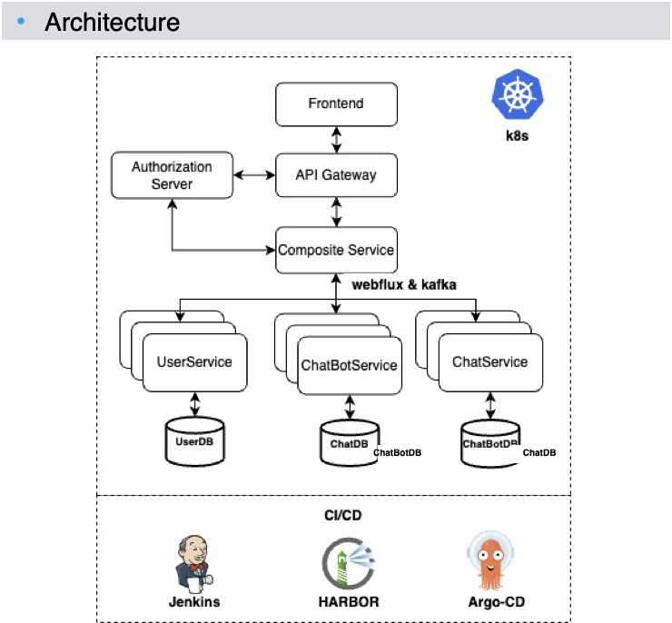
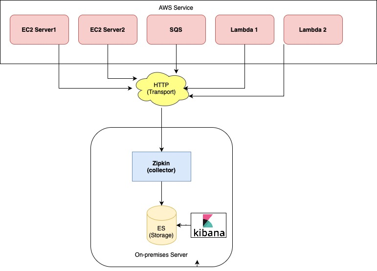
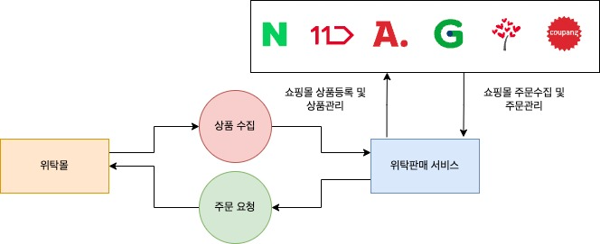
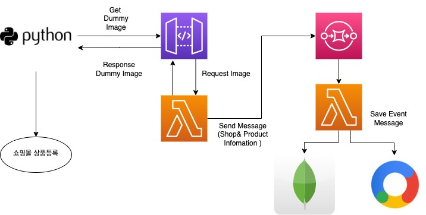
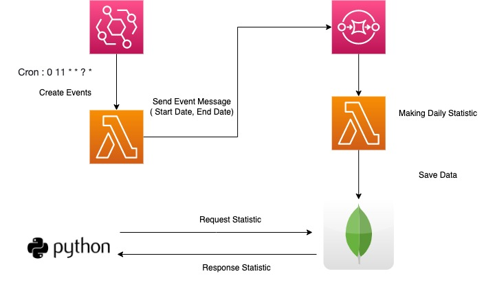

Projects
LLM 솔루션 백엔드 아키텍처 설계 및 구현

RAG(검색증강생성) 기술을 기반으로 한 Private AI 솔루션을 MVP에서 제품화 단계까지 개발 프로젝트
﹒ 기술 세미나에 발표 후 공감대 형성되어 주도적인 개발 진행
﹒ Spring Cloud Sleuth의 BraveTracer 사용
﹒ 특정 데이터 시각화를 위해 ElasticSearch Ingest pipeline 사용하여 데이터 변환
﹒ pyzipkin 라이브러리 커스텀하여 멀티 쓰레드 환경 적용
﹒ 재고 변동관련 log 필터 저장을 통한 재고 변동 시각화
﹒ Spring Cloud Sleuth의 BraveTracer 사용
﹒ 특정 데이터 시각화를 위해 ElasticSearch Ingest pipeline 사용하여 데이터 변환
﹒ pyzipkin 라이브러리 커스텀하여 멀티 쓰레드 환경 적용
﹒ 재고 변동관련 log 필터 저장을 통한 재고 변동 시각화
사용기술
Programming Language: Python, Java
Framework: Django, Spring Boot, Spring Cloud API Gateway
Authentication & Security: Spring Authorization Server
Cloud & Infrastructure: Kubernetes
API Gateway & Routing: Spring Cloud API Gateway
Middleware & Messaging: WebFlux, Kafka
CI/CD: Jenkins, Harbor, ArgoCD
Database: PostgreSQL, MongoDB, Redis
MSA 환경에서 Zipkin을 활용해 로그 트레이싱 - 더커머스

마이크로 서비스 간에 통신이 발생하여 로그를 확인하기 어려운 문제를 해결하기 위해 Distributed Tracing 기술을 도입함으로써 통신을 추적하고 모니터링하는 프로젝트
﹒ 기술 세미나에 발표 후 공감대 형성되어 주도적인 개발 진행
﹒ Spring Cloud Sleuth의 BraveTracer 사용
﹒ 특정 데이터 시각화를 위해 ElasticSearch Ingest pipeline 사용하여 데이터 변환
﹒ pyzipkin 라이브러리 커스텀하여 멀티 쓰레드 환경 적용
﹒ 재고 변동관련 log 필터 저장을 통한 재고 변동 시각화
﹒ Spring Cloud Sleuth의 BraveTracer 사용
﹒ 특정 데이터 시각화를 위해 ElasticSearch Ingest pipeline 사용하여 데이터 변환
﹒ pyzipkin 라이브러리 커스텀하여 멀티 쓰레드 환경 적용
﹒ 재고 변동관련 log 필터 저장을 통한 재고 변동 시각화
사용기술
Language: Java, Python
Framework&Library: Spring Cloud Sleuth, Zipkin, pyzipkin
DB: Elasticsearch
Tools: Kibana
위탁판매 서비스 (원셀) - 더커머스

3rd Party Sales의 형태로 도매몰의 상품을 수집하여 사용자 오픈마켓에 상품을 등록 및 관리하고 신규 주문이 발생하면 도매몰에 배송 요청 후 오픈마켓에도 주문 상태 동기화해주는 기능
﹒ 30만건이 넘는 상품을 등록하고 상품, 주문 관리하는 위탁판매 서비스를 신규 개발 및 운영한 경험
﹒ 위탁판매 서비스는 Java, Spring으로 개발하고 외부 채널에 요청하는 기능은 Python으로 Lambda 구현
﹒ 형태소 분석 라이브러리를 활용해 데이터 가공 후 MongoDB Text Search 가중치에 따른 카테고리 추천 기능 구현
﹒ Strategy Design Pattern 적용을 통한 서비스 확장성 기여
﹒ ParallelStream을 사용한 병렬 처리로 상품 수집 속도를 75% 향상
﹒ Product Owner 역할을 겸하며 서비스 안정화에 기여
﹒ 위탁판매 서비스는 Java, Spring으로 개발하고 외부 채널에 요청하는 기능은 Python으로 Lambda 구현
﹒ 형태소 분석 라이브러리를 활용해 데이터 가공 후 MongoDB Text Search 가중치에 따른 카테고리 추천 기능 구현
﹒ Strategy Design Pattern 적용을 통한 서비스 확장성 기여
﹒ ParallelStream을 사용한 병렬 처리로 상품 수집 속도를 75% 향상
﹒ Product Owner 역할을 겸하며 서비스 안정화에 기여
사용기술
Language: Java, Python
Framework: SpringBoot
AWS: Lambda, SQS
DB: MongoDB
Tools: Jira, Confluence
외부 API 연동작업 - 더커머스
굿스플로(물류플랫폼 서비스) API 연동
인터파크 쇼핑몰 API 연동
인터파크 쇼핑몰 API 연동
﹒ Third Party 연동 작업
﹒ API 요청 응답 값을 특정 데이터 포맷에 맞추는 Converting 기능 개발
﹒ API 요청 응답 값을 특정 데이터 포맷에 맞추는 Converting 기능 개발
사용기술
Language: Python
Framework: Flask
AWS: Lambda, SQS
DB: MongoDB
Tools: Jira, Confluence
페이지뷰 - 더커머스
상품을 쇼핑몰 채널(쿠팡,스마트스토어,11번가 등등) 등록 시, 상품 상세 정보에 Dummy Image를 입력하여 이미지 요청이 있을 때마다 해당 정보를 저장 후 상품 통계를 제공 해주는 서비스


﹒ EventBridge 스케줄을 통해 주기적으로 Lambda 실행 시켜 통계 데이터 집계 기능 구현
﹒ API 개발 및 통계 데이터 추출
﹒ API 개발 및 통계 데이터 추출
사용기술
Language: Python
Framework: Flask
AWS: API Gateway, Lambda, SQS, EventBridge
DB: MongoDB
Tools: Jira, Confluence
RPA Project - 아이셋디에이
RPA 중급 개발자로 신규 RPA 프로젝트 개발. 초기 프로젝트 셋업 및 Orchestrator 환경에서 Unattended, Attened Bot 개발.
﹒ PLSQL 쿼리 작성 및 통계 집계 실행 자동화 개발
﹒ 협업 직원 RPA 개발 교육
﹒ VB.NET LINQ 쿼리 (select, join, group by)로 데이터 집계 자동화
﹒ 현대모비스 그룹사 모범 RPA 프로젝트 선정
﹒ 현대모비스 진천 공장 RPA 신규 프로젝트
﹒ 유라코퍼레이션 RPA 신규 프로젝트
﹒ 한라 RPA 신규 프로젝트
﹒ 만도 RPA 신규 프로젝트
﹒ 협업 직원 RPA 개발 교육
﹒ VB.NET LINQ 쿼리 (select, join, group by)로 데이터 집계 자동화
﹒ 현대모비스 그룹사 모범 RPA 프로젝트 선정
﹒ 현대모비스 진천 공장 RPA 신규 프로젝트
﹒ 유라코퍼레이션 RPA 신규 프로젝트
﹒ 한라 RPA 신규 프로젝트
﹒ 만도 RPA 신규 프로젝트
사용기술
Language: VB.Net, C#, PLSQL
Framework: ReFramework
Tools: UiPath
대학생경력개발 시스템 (SI) - 다인리더스
고객사는 주로 대학교로 대학교의 요구사항을 수용하여 대학생 경력개발 시스템을 개발하고 납품 및 운영을 했습니다.
﹒ Java와 Spring Framework, 전자정부프레임워크를 사용하여 대학교의 대학생 경력 관리 업무를 처리하는 프로젝트를 진행
﹒ Lombok 라이브러리를 적용하여 코드 생상성 증대
﹒ 공통 기능을 추상화하여 공통 기능 라이브러리를 개발하여 코드 재사용성을 향상
﹒ Factory Method 패턴을 적용하여 유연한 객체 생성 방식을 구현
﹒ Javascript와 JQuery를 사용하여 이벤트 처리를 구현
﹒ 비동기 처리 작업에는 Ajax 라이브러리를 활용
﹒ 고객사에 따라 Oracle, Mysql, Tibero, MariaDB 등 다양한 DB를 사용
﹒ Star UML과 eXERD를 활용하여 분석 설계 문서화
﹒ 파일 업로드 기능 공통 Interface 구현
﹒ 목포해양대학교(GPS인재 통합관리시스템)
﹒ 광주대학교(성과누리시스템, 기획누리시스템, 교육누리시스템, 산학누리시스템, LINC+)
﹒ ICO 서비스 홍보 데모 사이트
﹒ 포항공과대학교(포스테키안 활동 통합관리)
﹒ 경인교육대학교(맞춤형 학습지원시스템)
﹒ 인덕대학교(통합학생역량개발시스템)
﹒ Lombok 라이브러리를 적용하여 코드 생상성 증대
﹒ 공통 기능을 추상화하여 공통 기능 라이브러리를 개발하여 코드 재사용성을 향상
﹒ Factory Method 패턴을 적용하여 유연한 객체 생성 방식을 구현
﹒ Javascript와 JQuery를 사용하여 이벤트 처리를 구현
﹒ 비동기 처리 작업에는 Ajax 라이브러리를 활용
﹒ 고객사에 따라 Oracle, Mysql, Tibero, MariaDB 등 다양한 DB를 사용
﹒ Star UML과 eXERD를 활용하여 분석 설계 문서화
﹒ 파일 업로드 기능 공통 Interface 구현
﹒ 목포해양대학교(GPS인재 통합관리시스템)
﹒ 광주대학교(성과누리시스템, 기획누리시스템, 교육누리시스템, 산학누리시스템, LINC+)
﹒ ICO 서비스 홍보 데모 사이트
﹒ 포항공과대학교(포스테키안 활동 통합관리)
﹒ 경인교육대학교(맞춤형 학습지원시스템)
﹒ 인덕대학교(통합학생역량개발시스템)
사용기술
Language: Java, Javascript, Linux
Framework: SpringFramework. eGovFrame
DB: Oracle, MySql, MariaDB, Tebero
Server: Tomcat, Jeus
Tools: SVN